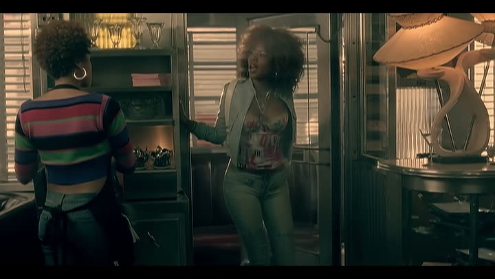

3:14«Lo mío hace que todos volteen — y si quieres, te enseño.»
Habla de algo que ella tiene y nadie más, y aun así se ofrece a enseñárselo a la otra.
Presume, pero no humilla. Dice que lo suyo atrae a todos y enseguida ofrece enseñárselo a la otra. Una marca que le vende a millones no puede decirle a nadie que sobra.
Nunca dice qué es eso que tiene. La letra lo deja abierto y cada quien piensa en lo suyo. Le sirve a cualquiera que la escuche, que es justo lo que una marca necesita.
Lo que se ve son los demás mirándola. Hombres pegados a la ventana, el local llenándose. No enseña lo que ella tiene: enseña cómo reacciona la gente.
Pasa en un comedero de carretera. Gente normal, sin lujo ni pasarela. Lo que llama la atención es ella, no el sitio — la misma idea del cuarto blanco de 2025.
La conocía todo el mundo. Nº 3 en Billboard y top 10 en nueve países. Para juntar a dos generaciones hacía falta una canción que la mamá reconociera de una.